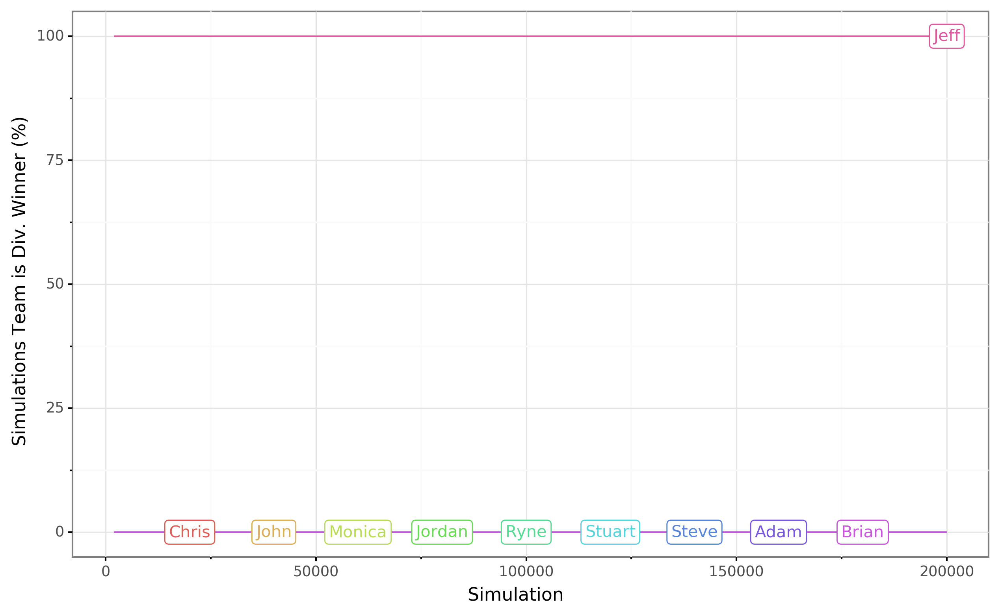
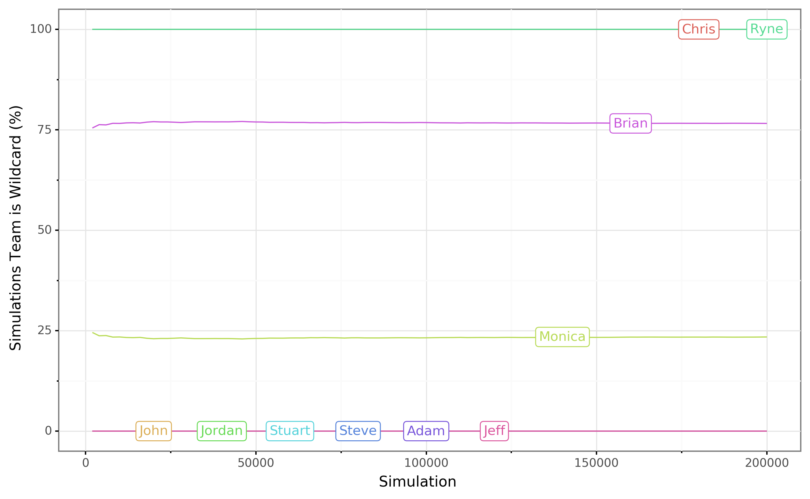

League of Extraordinary Gypsies Power Rankings
Because trash talk is better with stats to back it up.
Week 12
Playoff Odds
The current playoff standings are:
- Jeff
- Ryne
- Chris
- Brian
Currently eliminated Teams:
- John
- Jordan
- Adam
- Stuart
- Steve
In order to predict the outcome of future games, I have fit the recorded scores for a team (up to this week) with a gaussian. Then I simulated the rest of the games in the season 200,000 times. In each simulated game, the score of a team is randomly chosen from the fitted distribution. The odds of making the playoffs are the fraction of simulated seasons in which each team makes the playoffs. The expected wins are the expected number of wins for the remaining games. The results are below.
| Team | Exp. Wins | Wildcard (%) | Div. Winner (%) | Make Playoffs (%) | Make Fedora (%) |
|---|---|---|---|---|---|
| Jeff Schulz | 0.868 | 0.000 | 100.0 | 100.000 | 0.00 |
| Ryne Carbone | 0.498 | 100.000 | 0.0 | 100.000 | 0.00 |
| Chris Pom | 0.961 | 99.987 | 0.0 | 99.987 | 0.00 |
| Brian Kohlman | 0.552 | 76.582 | 0.0 | 76.582 | 0.00 |
| Monica Cooley | 0.502 | 23.431 | 0.0 | 23.431 | 0.00 |
| John Cronin | 0.132 | 0.000 | 0.0 | 0.000 | 0.00 |
| Jordan Hardy | 0.039 | 0.000 | 0.0 | 0.000 | 3.21 |
| Stuart Frazier | 0.448 | 0.000 | 0.0 | 0.000 | 7.70 |
| Steve Kamke | 0.608 | 0.000 | 0.0 | 0.000 | 89.10 |
| Adam Kachelski | 0.392 | 0.000 | 0.0 | 0.000 | 100.00 |


Power Rankings
| # | Δ | Owner | Record | Power | LSQ | 2SD | Colley | AWP | SOS | Luck | Cons | Tier |
|---|---|---|---|---|---|---|---|---|---|---|---|---|
| 3 | 1 | Chris Pom | 7-4 | 91.261 | 0.928 | 0.729 | 0.857 | 0.737 | 0.902 | 0.669 | 0.981 | 2 |
| 7 | 1 | John Cronin | 5-6 | 83.697 | 0.838 | 0.533 | 0.643 | 0.434 | 0.883 | 0.576 | 0.914 | 4 |
| 5 | Monica Cooley | 6-5 | 86.598 | 0.901 | 0.600 | 0.703 | 0.515 | 0.795 | 0.575 | 1.000 | 3 | |
| 9 | Jordan Hardy | 4-7 | 76.478 | 0.765 | 0.377 | 0.544 | 0.293 | 0.904 | 0.525 | 0.781 | 5 | |
| 4 | Ryne Carbone | 8-3 | 91.149 | 0.975 | 0.975 | 0.963 | 0.525 | 0.903 | 0.479 | 0.930 | 2 | |
| 6 | 1 | Stuart Frazier | 4-7 | 84.758 | 0.701 | 0.510 | 0.530 | 0.465 | 0.901 | 0.716 | 0.917 | 4 |
| 10 | Steve Kamke | 1-10 | 72.727 | 0.509 | 0.154 | 0.270 | 0.394 | 1.000 | 1.000 | 0.976 | 5 | |
| 8 | Adam Kachelski | 4-7 | 81.380 | 0.718 | 0.514 | 0.567 | 0.394 | 0.969 | 0.642 | 0.900 | 5 | |
| 2 | 1 | Brian Kohlman | 7-4 | 91.417 | 0.948 | 0.884 | 0.850 | 0.505 | 0.881 | 0.509 | 0.974 | 2 |
| 1 | Jeff Schulz | 9-2 | 94.476 | 1.000 | 1.000 | 1.000 | 0.737 | 0.768 | 0.565 | 0.933 | 1 |
Metrics
| Power | Final weighted combination of the other metrics |
| LSQ | Iterative Least Square minimization, comparing predictive ranking difference to score outcome |
| 2SD | Two step dominance matrix, recency weighting |
| Colley | Colley matrix ranking, only factors outcome |
| AWP | Aggregate winning percentage |
| SOS | Relative strength of schedule, based on LSQ rankings |
| Luck | Luck ranking boost, factors opponents score and aggregrate wins |
| Cons | Weekly scoring consistency metric |
| Tier | Clustering by finding minima in Gaussian Kernel Density Estimation |